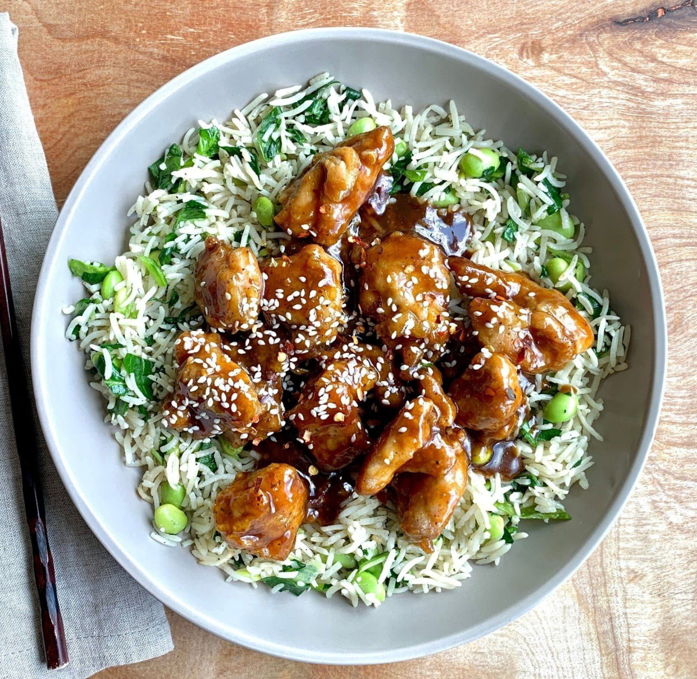

Chicken Teriyaki Recipe

Photo by eatflavorly, licensed under CC BY 4.0
Description
Chicken Teriyaki is a popular Japanese dish made with tender pieces of chicken that are grilled or pan-cooked and glazed with a sweet and savory teriyaki sauce. The sauce typically consists of soy sauce, mirin (sweet rice wine), sake, and sugar, creating a glossy, flavorful coating. The chicken is often served sliced over steamed white rice, garnished with sesame seeds and green onions, and sometimes accompanied by vegetables like broccoli or carrots. The result is a delicious balance of umami, sweetness, and a slightly smoky char.
Ingredients
- 1 cup low-sodium soy sauce
- 1/4 cup sake
- 3 tablespoons rice vinegar
- 1/3 cup brown sugar, or more to taste
- 1 tablespoon white sesame seeds
- 1/4 teaspoon crushed red pepper
- 2 teaspoons canola or peanut oil
- 1 teaspoon toasted sesame oil
- 1 teaspoon kosher salt
- 1/2 teaspoon freshly ground black pepper
- 2 pounds boneless skinless chicken thighs, cut into 1 ½ inch pieces
- 2 teaspoons grated fresh ginger
- 1 teaspoon finely minced garlic
- 1 bunch green onions, thinly sliced, divided
- 1 ½ cups cooked rice
Steps
- Combine soy sauce, sake, rice vinegar, and brown sugar in a bowl and whisk well until sugar is dissolved. Stir in sesame seeds and crushed red pepper and set aside.
- Heat oils in a large skillet over high heat. Sprinkle salt and pepper evenly over chicken. Add chicken in a single layer to the skillet and cook, undisturbed until chicken is browned and releases easily from the pan, 4 to 6 minutes. Flip chicken pieces, cook 1 more minute and remove from pan; set aside.
- Reduce heat to medium and add ginger and garlic. Cook, stirring constantly, until fragrant, about 1 minute. Reserve 2 tablespoon of the green onions for garnish and add remaining green onions to the skillet. Cook for 1 minute. Add 1 cup reserved soy sauce mixture to the skillet and stir with a wooden spoon, scraping up any browned bits from the bottom of the skillet. Bring mixture to a boil and cook until sauce has reduced by about a third or until slightly thickened and glossy.
- Return chicken to the skillet and cook, stirring occasionally, until sauce is thickened slightly and chicken is coated in the sauce and cooked through. Serve over rice and sprinkled with reserved green onions.
Home